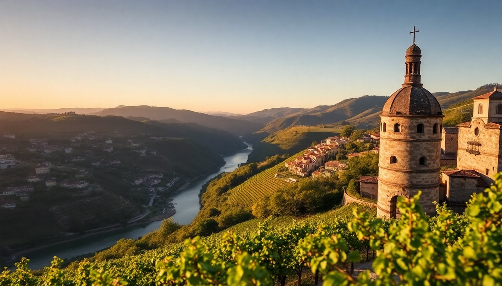

Top Portuguese Wine Regions for a First-Person Trip

I’ve spent weeks crisscrossing Portugal with a corkscrew in my backpack, and I can tell you this: wine here isn’t just a drink—it’s the landscape in a glass. From the terraced schist slopes of the Douro to the volcanic soils of Madeira, each region has a distinct personality. This guide cuts through the hype and tells you exactly where to go, what to taste, and what to skip.
Why is Porto the gateway to port wine?
Porto is your launchpad, but the real action is across the river in Vila Nova de Gaia. That’s where the port lodges line the waterfront, and you can walk between them in under 20 minutes. I started at Sandeman for their dry white port—crisp, nutty, and nothing like the syrupy stuff you might imagine. Then I walked to Graham’s for a tawny tasting; their 20-year-old is dangerously smooth. Skip the basic cellar tours that rush you through a barrel room and instead book a horizontal tasting at Taylor’s—they pour four vintages side-by-side so you can actually learn the difference between ruby and tawny.
For a meal, don’t miss Cantinho do Avillez on Rua de Mouzinho da Silveira; their octopus with roasted peppers pairs perfectly with a Vinho Verde from the Minho region. If you want a hotel with a view, The Yeatman has a rooftop pool overlooking the Douro and a wine cellar with over 1,000 labels.
What’s the best way to explore the Douro Valley?
Drive yourself or hire a driver for a day. The train ride from Porto to Pinhão is scenic, but you’re stuck on a schedule. I rented a car and stopped at Quinta do Seixo (a Sandeman property) for a tour that ends on their terrace—the valley unfolds below like a green staircase. The tasting there included a late-bottled vintage that made me buy a bottle to take home.
Stay overnight at Quinta da Pacheca—they have wine-barrel rooms that are gimmicky but surprisingly comfortable. The real draw is their wine spa; I did a grape-seed scrub that left my skin smelling like a harvest festival. For lunch, Cozinha da Clara in Pinhão serves a mean bacalhau à brás with a local red from the Douro DOC. Avoid the tourist-packed river cruises that only stop for 30 minutes at a quinta; you’ll spend more time boarding than tasting.
Which Lisbon wine bars should I hit?
Lisbon isn’t a wine region itself, but it’s the best place to taste wines from across Portugal without leaving the city. I spent an evening at A Taberna da Rua das Flores—no menu, just the owner telling you what’s good that day. I tried a Bairrada sparkling (surprisingly elegant) and a Dão red that tasted like wild berries and granite.
For a more structured tasting, ViniPortugal runs a walk-in tasting room near the Time Out Market with 30+ wines by the glass. I’d skip the market itself—it’s a zoo—and instead head to O Velho Eurico for a petiscos dinner. The pica-pau (marinated beef) paired with a crisp Alvarinho from Vinho Verde was a highlight. If you’re looking for a hotel with a wine focus, Hotel da Estrela has a nightly wine hour in their garden with bottles from small producers.
Is Alentejo worth the drive from Lisbon?
Yes, but only if you have at least two days. Alentejo is Portugal’s breadbasket—rolling plains, cork oaks, and some of the best-value reds in the country. I drove from Lisbon to Évora in about 90 minutes and based myself at Convento do Espinheiro, a converted 15th-century convent with a pool overlooking vineyards. The town itself is a UNESCO site; don’t miss the Roman Temple and the Chapel of Bones (gruesome but fascinating).
For wine, head to Herdade do Esporão, about 30 minutes south of Évora. Their tasting room is modern and they pour a Reserva red that’s a steal at €12 a bottle. I also stopped at Adega da Cartuxa, a winery run by the local university—their Periquita label is a classic, but the real find was their Alicante Bouschet, a grape that stains your lips purple. Lunch at Restaurante O Fialho in Évora: the açorda de marisco (bread and seafood stew) with a glass of Esporão white was a perfect midday pairing.
What makes Madeira’s wine scene unique?
Madeira wine is famous for its longevity—bottles from the 1800s still drink well—but the island itself is a wine lover’s playground. I flew into Funchal and stayed at Quinta da Casa Branca, a boutique hotel surrounded by gardens. The wine lodges in Funchal are more intimate than Porto’s; I visited Blandy’s for a guided tour that ended with a 10-year-old Malmsey that tasted like caramel and orange peel.
The real magic is in the terroir. Madeira’s volcanic soil and high-altitude vineyards produce grapes like Sercial and Verdelho that are bone-dry and electric. I drove up to the Estreito de Câmara de Lobos area and visited Henriques & Henriques—their Verdelho is the perfect aperitif. For a meal, Restaurante do Forte near the old town does a espetada (beef skewers) that you wash down with a glass of Rainwater Madeira. Skip the touristy Monte Palace; the winery tours in Funchal are more authentic and less crowded.
When is the best time to visit these regions?
April to June and September to October are ideal. July and August are hot and crowded—I made the mistake of visiting the Douro in August and the tasting rooms were packed with cruise-ship groups. In May, the vineyards are lush and the harvest hasn’t started yet, so you get one-on-one attention at smaller quintas. In September, you can watch the grape harvest in the Douro and Alentejo, but book tours a month ahead.
Winter (November to February) is quiet and cheap, but many wineries in the Douro close for the off-season. I visited Alentejo in February and had Herdade do Esporão mostly to myself—the tasting room was open, but the vineyard tours were limited. Madeira is a year-round destination; the wine lodges in Funchal are open daily, and the weather rarely dips below 15°C.
FAQ
What’s the difference between port and Madeira wine? Port is fortified during fermentation, which stops the sugar from converting to alcohol, leaving it sweet and fruity. Madeira is fortified after fermentation, then heated and oxidized, which gives it a nutty, caramelized flavor. Port is best young or aged in bottle; Madeira can last decades in the cellar and still taste vibrant.
Do I need to book wine tours in advance? Yes, especially in the Douro Valley and at popular lodges like Taylor’s in Porto. I booked my tour at Quinta do Seixo three weeks ahead and still only got a late-afternoon slot. Smaller producers in Alentejo and Madeira are more flexible—I walked into Adega da Cartuxa without a reservation and got a personal tasting.
Can I visit these regions without a car? Porto and Lisbon are walkable for wine bars, but the Douro Valley and Alentejo are tough without wheels. I took the train from Porto to Pinhão once, and while it’s scenic, I had to rely on taxis to reach the quintas. In Madeira, the public buses run to Funchal’s wine lodges, but renting a car is better for exploring the mountain vineyards.
Conclusion
- Porto is your starting point for port tastings; stick to Vila Nova de Gaia lodges like Graham’s and Taylor’s.
- Douro Valley rewards drivers; stay overnight at Quinta da Pacheca for the full experience.
- Lisbon is a wine-bar hub; A Taberna da Rua das Flores is non-negotiable.
- Alentejo is underrated and affordable; base yourself in Évora and visit Herdade do Esporão.
- Madeira is a year-round gem; Blandy’s and Henriques & Henriques deliver the best tastings.